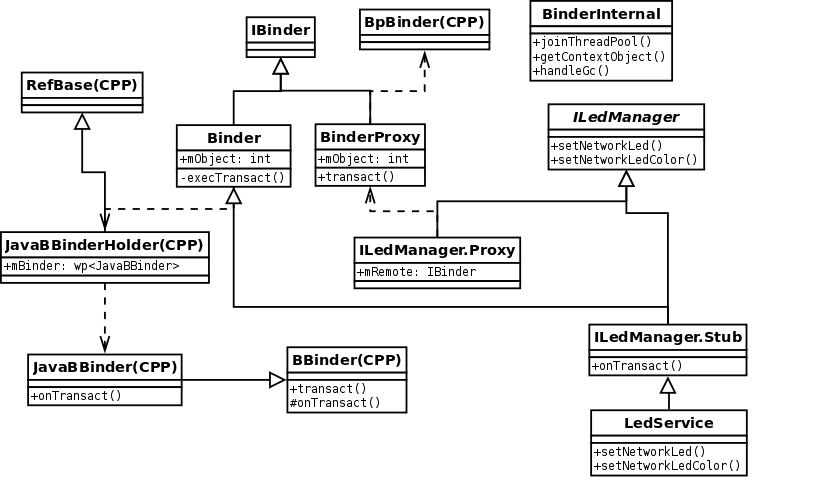

<!doctype html>
<html lang="en">
<head>
<meta charset="utf-8">
<!--<meta charset="gb2312">-->

		<title>Binder Analysis IV</title>

		<meta name="description" content="A framework for easily creating beautiful presentations using HTML">
		<meta name="author" content="Hakim El Hattab">

		<meta name="apple-mobile-web-app-capable" content="yes" />
		<meta name="apple-mobile-web-app-status-bar-style" content="black-translucent" />

        <!--<meta name="viewport" content="width=device-width, initial-scale=1.0, maximum-scale=1.0, user-scalable=no">-->
		<meta name="viewport" content="width=device-width, initial-scale=1.0, maximum-scale=1.0, user-scalable=yes">

		<link rel="stylesheet" href="reveal/css/reveal.min.css">
		<link rel="stylesheet" href="reveal/css/theme/default.css" id="theme">

		<!-- For syntax highlighting -->
		<link rel="stylesheet" href="reveal/lib/css/zenburn.css">

		<!-- If the query includes 'print-pdf', use the PDF print sheet -->
		<script>
			document.write( '<link rel="stylesheet" href="reveal/css/print/' + ( window.location.search.match( /print-pdf/gi ) ? 'pdf' : 'paper' ) + '.css" type="text/css" media="print">' );
		</script>

		<!--[if lt IE 9]>
		<script src="lib/js/html5shiv.js"></script>
		<![endif]-->
	</head>
    <body>
        <div class="reveal">
            <div class="slides">
                <section data-markdown data-separator="===" data-vertical='---'>
                    <script type="text/template">
                       ## Binder Analysis part 4
                       ### Implements in Java

                       lijin@routon
                    </script>
                </section>
                <section data-markdown data-separator="===" data-vertical='---'>
                    <script type="text/template">
                    Java 类总览
                   
                    </script>
                </section>
                <section data-markdown data-separator="===" data-vertical='---'>
                    <script type="text/template">
                    ### 初始化JNI
                    <pre><code class="Java" data-trim>
int register_android_os_Binder(JNIEnv* env)
{
    if (int_register_android_os_Binder(env) < 0)
        return -1;
    if (int_register_android_os_BinderInternal(env) < 0)
        return -1;
    if (int_register_android_os_BinderProxy(env) < 0)
        return -1;
    if (int_register_android_os_Parcel(env) < 0)
        return -1;
    return 0;
}
                    </code></pre>
                    ---
                    int_register_android_os_Binder()
                    <pre><code  data-trim>
static int int_register_android_os_Binder(JNIEnv* env)
{
    jclass clazz;

    clazz = env->FindClass(kBinderPathName);
    LOG_FATAL_IF(clazz == NULL, "Unable to find class android.os.Binder");

    gBinderOffsets.mClass = (jclass) env->NewGlobalRef(clazz);
    gBinderOffsets.mExecTransact
        = env->GetMethodID(clazz, "execTransact", "(IIII)Z");
    assert(gBinderOffsets.mExecTransact);

    gBinderOffsets.mObject
        = env->GetFieldID(clazz, "mObject", "I");
    assert(gBinderOffsets.mObject);

    return AndroidRuntime::registerNativeMethods(
        env, kBinderPathName,
        gBinderMethods, NELEM(gBinderMethods));
}
                    </code></pre>
                    ---
                    int_register_android_os_BinderProxy()
                    <pre><code data-trim>

static int int_register_android_os_BinderProxy(JNIEnv* env)
{
    jclass clazz;

    clazz = env->FindClass("java/lang/ref/WeakReference");
    LOG_FATAL_IF(clazz == NULL, "Unable to find class java.lang.ref.WeakReference");
    gWeakReferenceOffsets.mClass = (jclass) env->NewGlobalRef(clazz);
    gWeakReferenceOffsets.mGet
        = env->GetMethodID(clazz, "get", "()Ljava/lang/Object;");
    assert(gWeakReferenceOffsets.mGet);

    clazz = env->FindClass("java/lang/Error");
    LOG_FATAL_IF(clazz == NULL, "Unable to find class java.lang.Error");
    gErrorOffsets.mClass = (jclass) env->NewGlobalRef(clazz);

    clazz = env->FindClass(kBinderProxyPathName);
    LOG_FATAL_IF(clazz == NULL, "Unable to find class android.os.BinderProxy");

    gBinderProxyOffsets.mClass = (jclass) env->NewGlobalRef(clazz);
    gBinderProxyOffsets.mConstructor
        = env->GetMethodID(clazz, "<init>", "()V");
    assert(gBinderProxyOffsets.mConstructor);
    gBinderProxyOffsets.mSendDeathNotice
        = env->GetStaticMethodID(clazz, "sendDeathNotice", "(Landroid/os/IBinder$DeathRecipient;)V");
    assert(gBinderProxyOffsets.mSendDeathNotice);

    gBinderProxyOffsets.mObject
        = env->GetFieldID(clazz, "mObject", "I");
    assert(gBinderProxyOffsets.mObject);
    gBinderProxyOffsets.mSelf
        = env->GetFieldID(clazz, "mSelf", "Ljava/lang/ref/WeakReference;");
    assert(gBinderProxyOffsets.mSelf);
    gBinderProxyOffsets.mOrgue
        = env->GetFieldID(clazz, "mOrgue", "I");
    assert(gBinderProxyOffsets.mOrgue);

    clazz = env->FindClass("java/lang/Class");
    LOG_FATAL_IF(clazz == NULL, "Unable to find java.lang.Class");
    gClassOffsets.mGetName = env->GetMethodID(clazz, "getName", "()Ljava/lang/String;");
    assert(gClassOffsets.mGetName);

    return AndroidRuntime::registerNativeMethods(
        env, kBinderProxyPathName,
        gBinderProxyMethods, NELEM(gBinderProxyMethods));
}
                    </code></pre>

                    </script>
                </section>
                <section data-markdown data-separator="===" data-vertical='---'>
                    <script type="text/template">
                    ## 分析客户端代码
                    <pre><code class="Java" data-trim>
            try{
                if(mLedService == null) {
                    IBinder b = ServiceManager.getService(Context.LED_SERVICE);
                    mLedService = ILedManager.Stub.asInterface(b);
                    //Log.i(TAG, "mLedService " + mLedService);
                }
                mLedService.blinkSysLedWithColor(1, Color.GREEN);
                //mLedService.blinkNetworkLedWithColor(1, Color.GREEN);
            } catch (RemoteException ex) { }
                    </code></pre>
                    ---
                    ServiceManager.getService()
                    <pre><code data-trim>
    public static IBinder getService(String name) {
        try {
            IBinder service = sCache.get(name);
            if (service != null) {
                return service;
            } else {
                return getIServiceManager().getService(name);
            }
        } catch (RemoteException e) {
            Log.e(TAG, "error in getService", e);
        }
        return null;
    }
                    </code></pre>
                    ---
                    getIServiceManager()
                    <pre><code data-trim>
    private static IServiceManager getIServiceManager() {
        if (sServiceManager != null) {
            return sServiceManager;
        }

        // Find the service manager
        sServiceManager = ServiceManagerNative.asInterface(BinderInternal.getContextObject());
        return sServiceManager;
    }
static jobject android_os_BinderInternal_getContextObject(JNIEnv* env, jobject clazz)
{
    sp < IBinder > b = ProcessState::self()->getContextObject(NULL);
    return javaObjectForIBinder(env, b);
}
jobject javaObjectForIBinder(JNIEnv* env, const sp < IBinder > & val)
{
    ...
    object = env->NewObject(gBinderProxyOffsets.mClass, gBinderProxyOffsets.mConstructor);
    if (object != NULL) {
        LOGDEATH("objectForBinder %p: created new proxy %p !\n", val.get(), object);
        // The proxy holds a reference to the native object.
        env->SetIntField(object, gBinderProxyOffsets.mObject, (int)val.get());
        val->incStrong(object);

        // The native object needs to hold a weak reference back to the
        // proxy, so we can retrieve the same proxy if it is still active.
        jobject refObject = env->NewGlobalRef(
                env->GetObjectField(object, gBinderProxyOffsets.mSelf));
        val->attachObject(&gBinderProxyOffsets, refObject,
                jnienv_to_javavm(env), proxy_cleanup);

        // Also remember the death recipients registered on this proxy
        sp < DeathRecipientList > drl = new DeathRecipientList;
        drl->incStrong((void*)javaObjectForIBinder);
        env->SetIntField(object, gBinderProxyOffsets.mOrgue, reinterpret_cast < jint > (drl.get()));
        ...
    }

    return object;//相当于返回了一个BinderProxy对象
}
    static public IServiceManager asInterface(IBinder obj)
    {
        if (obj == null) {
            return null;
        }
        ...
        return new ServiceManagerProxy(obj);
    }
                    </code></pre>
                    ---
                    继续刚才的代码：
                    getService(String name)
                    <pre><code data-trim>
    IBinder b = ServiceManager.getService(Context.LED_SERVICE);
    public static IBinder getService(String name) {
        try {
            IBinder service = sCache.get(name);
            if (service != null) {
                return service;
            } else {
                return getIServiceManager().getService(name);
            }
        } catch (RemoteException e) {
            Log.e(TAG, "error in getService", e);
        }
        return null;
    }
    ServiceManagerProxy(ServiceManagerNative.java):
    public IBinder getService(String name) throws RemoteException {
        Parcel data = Parcel.obtain();
        Parcel reply = Parcel.obtain();
        data.writeInterfaceToken(IServiceManager.descriptor);
        data.writeString(name);
        mRemote.transact(GET_SERVICE_TRANSACTION, data, reply, 0);
        IBinder binder = reply.readStrongBinder();
        reply.recycle();
        data.recycle();
        return binder;
    }
static jboolean android_os_BinderProxy_transact(JNIEnv* env, jobject obj,
        jint code, jobject dataObj, jobject replyObj, jint flags) // throws RemoteException
{
    ...
    Parcel* data = parcelForJavaObject(env, dataObj);
    Parcel* reply = parcelForJavaObject(env, replyObj);
    IBinder* target = (IBinder*)
        env->GetIntField(obj, gBinderProxyOffsets.mObject);
    status_t err = target->transact(code, *data, reply, flags);
    ...
}
                    </code></pre>
                    ---
                    <pre><code class="Java" data-trim>
                    mLedService = ILedManager.Stub.asInterface(b);
public static android.hardware.tdevice.ILedManager asInterface(android.os.IBinder obj)
{
    if ((obj==null)) {
        return null;
    }
    android.os.IInterface iin = (android.os.IInterface)obj.queryLocalInterface(DESCRIPTOR);
    if (((iin!=null)&&(iin instanceof android.hardware.tdevice.ILedManager))) {
        return ((android.hardware.tdevice.ILedManager)iin);
    }
    return new android.hardware.tdevice.ILedManager.Stub.Proxy(obj);
}
                    </code></pre>
                    </script>
                </section>
                <section data-markdown data-separator="===" data-vertical='---'>
                    <script type="text/template">
                    ## 分析服务端代码
                    ---
                    <pre><code class="Java" data-trim>
public static abstract class Stub extends android.os.Binder implements android.hardware.tdevice.ILedManager
    public Binder() {
        init();
        ...
    }
static void android_os_Binder_init(JNIEnv* env, jobject obj)
{
    JavaBBinderHolder* jbh = new JavaBBinderHolder();
    if (jbh == NULL) {
        jniThrowException(env, "java/lang/OutOfMemoryError", NULL);
        return;
    }
    LOGV("Java Binder %p: acquiring first ref on holder %p", obj, jbh);
    jbh->incStrong((void*)android_os_Binder_init);
    //将一个JavaBBinderHolder对象与Java的Binder对象相关联
    env->SetIntField(obj, gBinderOffsets.mObject, (int)jbh);
}
                    </code></pre>
                    ---
                    JavaBBinderHolder的get方法中又会返回JavaBBinder对象
                    <pre><code data-trim>
class JavaBBinderHolder : public RefBase
{
public:
    sp<JavaBBinder> get(JNIEnv* env, jobject obj)
    {
        AutoMutex _l(mLock);
        sp<JavaBBinder> b = mBinder.promote();
        if (b == NULL) {
            b = new JavaBBinder(env, obj);
            mBinder = b;
            LOGV("Creating JavaBinder %p (refs %p) for Object %p, weakCount=%d\n",
                 b.get(), b->getWeakRefs(), obj, b->getWeakRefs()->getWeakCount());
        }

        return b;
    }
    wp<JavaBBinder> mBinder;
};
                    </code></pre>
                    ---
                    由前面PART2的分析我们知道，要将binder实体“传送”出去就要将binder写进parcel中，接下来看下其JAVA实现：
                    <pre><code data-trim>
static void android_os_Parcel_writeStrongBinder(JNIEnv* env, jobject clazz, jobject object)
{
    Parcel* parcel = parcelForJavaObject(env, clazz);
    if (parcel != NULL) {
        const status_t err = parcel->writeStrongBinder(ibinderForJavaObject(env, object));

    }
}

sp<IBinder> ibinderForJavaObject(JNIEnv* env, jobject obj)
{
    if (obj == NULL) return NULL;

//这里我们就会看到
//1.若该Obj为android.os.Binder类，则调用JavaBBinderHolder类的get方法，返回实际上完成binder功能的JavaBBinder对象
//2.若为android.os.BinderProxy类，则直接返回BpBinder
    if (env->IsInstanceOf(obj, gBinderOffsets.mClass)) {
        JavaBBinderHolder* jbh = (JavaBBinderHolder*)
            env->GetIntField(obj, gBinderOffsets.mObject);
        return jbh != NULL ? jbh->get(env, obj) : NULL;
    }

    if (env->IsInstanceOf(obj, gBinderProxyOffsets.mClass)) {
        return (IBinder*)
            env->GetIntField(obj, gBinderProxyOffsets.mObject);
    }

    LOGW("ibinderForJavaObject: %p is not a Binder object", obj);
    return NULL;
}
                    </code></pre>
                    ---
                    接下来分析Java端服务的业务逻辑是如何加进来的
                    ---
                    由于此时起作用的binder类型为JavaBBinder,所以我们查看其onTransact实现
                    <pre><code data-trim>
    virtual status_t onTransact(
        uint32_t code, const Parcel& data, Parcel* reply, uint32_t flags = 0)
    {
        JNIEnv* env = javavm_to_jnienv(mVM);
        //很明显这里调用了之前保存的Binder类的execTransact方法
        jboolean res = env->CallBooleanMethod(mObject, gBinderOffsets.mExecTransact,
    }
    private boolean execTransact(int code, int dataObj, int replyObj,
            int flags) {
        Parcel data = Parcel.obtain(dataObj);
        Parcel reply = Parcel.obtain(replyObj);
        // theoretically, we should call transact, which will call onTransact,
        // but all that does is rewind it, and we just got these from an IPC,
        // so we'll just call it directly.
        boolean res;
        try {
            //这里又会直接调用onTransact方法，由于生成的ILedService.Stub重载了该函数，所以会直接调用ILedService.Stub.onTransact()
            //至此，业务逻辑打通
            res = onTransact(code, data, reply, flags);
        } catch (RemoteException e) {
            reply.writeException(e);
            res = true;
        } catch (RuntimeException e) {
            reply.writeException(e);
            res = true;
        } catch (OutOfMemoryError e) {
            RuntimeException re = new RuntimeException("Out of memory", e);
            reply.writeException(re);
            res = true;
        }
        reply.recycle();
        data.recycle();
        return res;
    }
                    </code></pre>
                    ---
                    注意一个细节
                    <pre><code data-trim>
@Override public boolean onTransact(int code, android.os.Parcel data, android.os.Parcel reply, int flags) throws android.os.RemoteException
{
    switch (code)
    {
        case INTERFACE_TRANSACTION:
        case TRANSACTION_setNetworkLed:
        case TRANSACTION_setNetworkLedColor:
        case TRANSACTION_blinkNetworkLed:
        case TRANSACTION_blinkNetworkLedWithColor:
        case TRANSACTION_setSysLed:
        case TRANSACTION_setSysLedColor:
        case TRANSACTION_blinkSysLed:
        case TRANSACTION_blinkSysLedWithColor:
        case TRANSACTION_getHwVersion:
    }
    //这里将会调用父类的onTransact方法，如同CPP实现一样
    return super.onTransact(code, data, reply, flags);
}
    其父类的函数里面又实现了dump方法的调用，所以我们就可以在命令行上键入dumpsys activity之类的命令查看其内部状态了
    protected boolean onTransact(int code, Parcel data, Parcel reply,
            int flags) throws RemoteException {
        if (code == INTERFACE_TRANSACTION) {
            reply.writeString(getInterfaceDescriptor());
            return true;
        } else if (code == DUMP_TRANSACTION) {
        ...
            return true;
        }
        return false;
    }
                    </code></pre>

                    </script>
                </section>
            </div>
        </div>
        <script src="reveal/lib/js/head.min.js"></script>
        <script src="reveal/js/reveal.min.js"></script>
        <script>
            Reveal.initialize({
                controls: true,
                progress: true,
                keyboard: true,
                overview: true,
                center: true,
                loop: false,
                // Change the presentation direction to be RTL
                rtl: false,
                // Number of milliseconds between automatically proceeding to the
                // next slide, disabled when set to 0, this value can be overwritten
                // by using a data-autoslide attribute on your slides
                autoSlide: 0,
                mouseWheel: false,
                rollingLinks: true,

                transition: 'default', // default/cube/page/concave/zoom/linear/fade/none
                transitionSpeed: 'default', // default/fast/slow
				dependencies: [
					{ src: 'reveal/lib/js/classList.js', condition: function() { return !document.body.classList; } },
					{ src: 'reveal/plugin/markdown/marked.js', condition: function() { return !!document.querySelector( '[data-markdown]' ); } },
					{ src: 'reveal/plugin/markdown/markdown.js', condition: function() { return !!document.querySelector( '[data-markdown]' ); } },
					{ src: 'reveal/plugin/highlight/highlight.js', async: true, callback: function() { hljs.initHighlightingOnLoad(); } },
					{ src: 'reveal/plugin/zoom-js/zoom.js', async: true, condition: function() { return !!document.body.classList; } },
					{ src: 'reveal/plugin/notes/notes.js', async: true, condition: function() { return !!document.body.classList; } }
				]
            });
        </script>
    </body>
</html>

